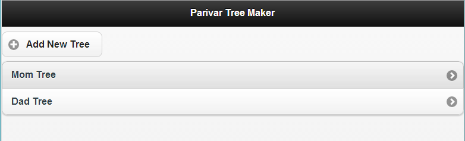

The Story
Last year when I visited India, I was saddened to realize that I don't remember many of my relatives'. I don't know their names, what they do, how many children they have or even how they are related to us. It is partly my fault but also an inevitable result of living thousands of miles apart from them for 13 years now. Perhaps I could also hold my grandparents and their parents a tiny bit responsible for having so many kids! The fact though was that I really wanted to get to know my relatives or at the very least, know how they are related to me.
I tried to internalize their names and things about them as they were introduced to us by our parents last year but only ended up with horrible flashbacks of trying to memorize parts of cell structure in AP biology class. Be it an evolutionary mutation or just general dumbness, I have been blessed with an exceptionally limited capability for retaining things. It was in the midst of this frustration of not being able to remember their names, and the urge to really want to do so... that I decided to research and create a family tree for both sides of my family.
So, as any lazy guy in 2013 would do, I went about researching a good free website/app to create a family tree. To my surprise, all the ones I found were either overly complicated or not free. Giving up my search for a pre-existing service, I decided to just draw my family tree by hand. After all, that's how people have been doing it for ages. It would take me a whole of about five minutes to realize that this was beyond me. No matter how big a paper I started with, I would run out of space even before I got to a depth level of two! Then it finally dawned on me - I can code... and on top of that, I am a pretty decent web developer. I should just make what I want myself! So I threw away the pencil, hopped over the drawing board and into my comfy swiveling chair.
Over the next few hours, I researched and created a test implementation of how to represent a tree, both in db and on the screen. Once satisfied with what I had, I went on to implement ways to add nodes to this tree - spouse, siblings, parents, children.
Pretty soon, I had something where I could begin making the tree. Next step, getting the data. Thankfully my parents do not suffer from the same retaining deficiency that I do. They kept telling me about their cousins, their fathers, their wives and husbands... and I kept entering all of this into my service. It wasn't long before I realized that I would never have been able to do this with a pencil and paper... and I thoroughly appreciate and respect those who did back in the days.
 Tree list view. Can make multiple trees! :)
The family tree is not complete (can it ever be?) because I only have data from my parents, and I'll be asking for help from my cousins and their parents to make it more extensive. However, Looking at the entire diagram always fills me with a strange sense of contentment, like a puzzle put together that you couldn't visualize before. I enjoyed making my family tree so much, that I decided to open up this service for anyone who wants to create one. It is the most basic idea, and one should not be forced to pay just to see their family's lineage on a screen or a piece of paper, especially if you create it yourself! So I added a quick sign up structure for anyone who wants to create family trees. You can see it here - Parivar Tree Maker
Quick Signup / Login!
Satisfied with the trees I have so far, and happy that I will continually be adding to it, I hereby mark another item on my 30 before 30 list - 'Research and create a family tree', complete.
You can see my trees here:
to my family, I apologize in advance if I got some of the names wrong. Please shoot me an email so I can fix it!